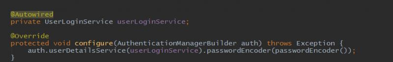
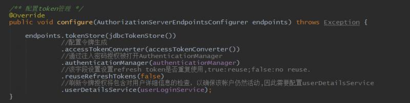
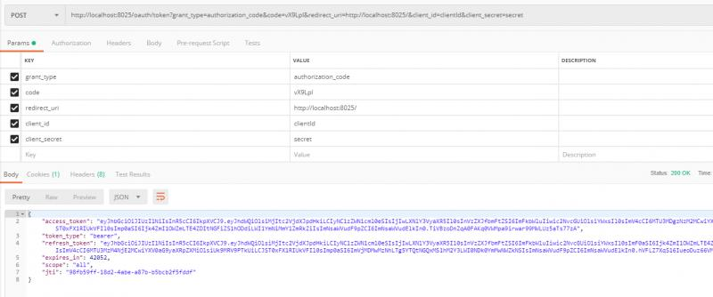
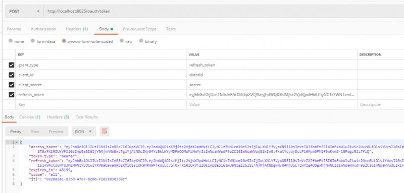

前面的例子和配置都是从头开始申请授权码和令牌，现在来看一下如何根据获取令牌时，回参中的 refresh_token 来刷新令牌。现在在项目中配置的是内存模式的默认用户名密码，第一步先改成数据库查询的方式，具体过程参考前面的文章即可，来看security配置类：

然后修改授权服务配置类，在 endpoints 中配置userDetailsService：

修改成数据库方式也是为了创建userDetailsService对象，刷新令牌时会根据此对象对用户信息进行检查。这样刷新令牌的配置就完成了。
首先根据前面的正常流程，申请授权码，然后获取到令牌：

回参中有一个参数是 refresh_token 这个参数就是专门用来刷新令牌的，下面来看如何刷新令牌。刷新令牌和获取令牌一样，需要用post的方式访问同一个地址 ：
不同的是，刷新令牌需要四个参数：
grant_type：值必须是 refresh_token
client_id
client_secret
refresh_token ： 上次获取令牌时回参中的 refresh_token
通过上面四个参数可以看出，刷新令牌中每次变化的参数只有refresh_token。我们来使用本次获取的 refresh_token 来刷新令牌：

可以看到刷新令牌和从头开始获取令牌返回的结果是一样的，使用本次刷新请求中返回的refresh_token替换上面的参数，还可以再次刷新。有兴趣可以多试几次。
代码地址： https://gitee.com/blueses/spring-boot-security 25
本文由博客一文多发平台 OpenWrite 发布！